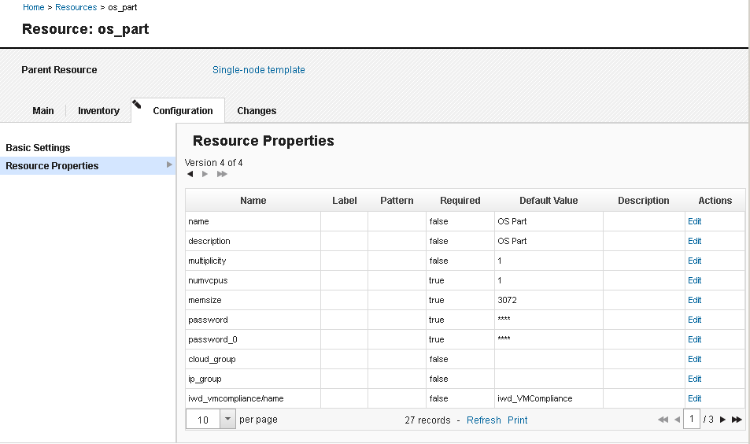
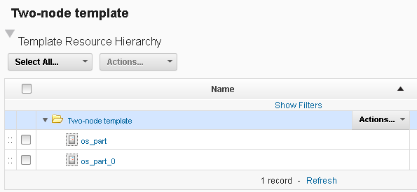

Importing resource templates from clouds
If you have a virtual system pattern on a cloud system, you can import that pattern as a resource template. This resource template is a pattern from which you can provision cloud resources.
Create a virtual system pattern on a compatible cloud system. Each node in this pattern must include the Install HCL® UrbanCode™ Deploy Agent script package. See Creating virtual system patterns for resource templates.
For this type of cloud integration, the following cloud systems are supported:
- IBM® Cloud Orchestrator version 2.4 or later
- IBM SmartCloud® Orchestrator versions 2.2 and 2.3
- IBM PureApplication® System version 1.0 or later
- IBM Workload Deployer version 3.1.0.6 or later
Within these cloud systems, you can provision the virtual resources in environment profiles or in cloud groups. You can also assign the virtual resources to IP groups, but only when you assign the resources to an environment profile first. For more information, see Creating environments. You can also use virtual images with no more than one virtual network card. HCL UrbanCode Deploy does not support selecting different flavors of virtual resources or virtual nodes that have a multiplicity greater than 1.
To connect to OpenStack and OpenStack-based clouds, SoftLayer®, Amazon Elastic Compute Cloud, VMware vCenter, or Microsoft™ Azure, see Connecting to clouds through the blueprint designer.
Cloud Orchestrator and PureApplication System introduced a new system for virtual system patterns. This new system is referred to as VSys.Next. The new virtual system patterns are supported on the following cloud systems:
- Cloud Orchestrator version 2.4 or later
- PureApplication System version 2.0 or later
When you use these cloud systems, you specify whether to use the original virtual system patterns or the new VSys.Next patterns. Resources that you provision with VSys.Next patterns appear under Instances > Virtual Systems. Resources that you provision without using the Use VSys.Next patterns option appear under Instances > Virtual Systems (classic). To provision resources with the Use VSys.Next patterns option, you must select an environment profile; you cannot use a cloud group. For more information about VSys.next patterns, see the following document: http://www.ibm.com/developerworks/websphere/library/techarticles/1412_apte/1412_apte.html. You can also refer to the documentation for your cloud system.
To connect to OpenStack and OpenStack-based clouds, SoftLayer, Amazon Elastic Compute Cloud, VMware vCenter, or Microsoft Azure, see Connecting to clouds through the blueprint designer.
- Click Resources > Resource Templates.
- Click Import Template from Cloud.
- Under Import Resource Template, specify a name for the new resource template.
- In the Cloud Connection list, select the connection to the cloud system. If you do not have a connection to the cloud system, click New Connection, and specify the information for the connection, including the host name and login information for the cloud system. For more information, see Connecting to clouds through HCL UrbanCode Deploy.
- If the cloud system supports VSys.next patterns (Cloud Orchestrator version 2.4 or later or PureApplication System version 2.0 or later), select the Use VSys.Next patterns check box to use these patterns.
- In the Cloud Resource list, select the virtual system pattern to use.
- In the Teams fields, specify the access information for the new resource template.
- Click Save.
-
Edit the properties for the nodes in the resource template:
- Click the new resource template to select it.
- Click an agent prototype, go to the Configuration tab, and click Resource properties.This table shows the properties for the node, including virtual image properties such as memory, number of processors, and starting passwords. The window also shows the properties for each script package on the node.
-
Edit the properties by clicking Edit next to a property.
You can use variables to refer to values that are not yet specified. For example, if you have a database node that is named
DB_nodeand an application node that is namedapp_node, you might have to use the host name of the database node in the application node configuration. However, the host name is not set until the cloud system provisions the nodes. In this case, you can refer to the host name of the database node with the following variable:${DB_node.hostname}For more information about using property variables, see the documentation for your cloud system.

The template opens, displaying the resource hierarchy for the template. The template contains a top-level folder and one agent prototype for each node in the pattern, as shown in the following figure.

Create an application blueprint from this resource template. See Creating blueprints for cloud environments that use virtual system patterns.
Parent topic: Modeling environments for clouds that use virtual system patterns